Los 30 Ejercicios Desarrollados al 100% (1 a 1): Datos, Recorte Escaneado con Zoom, Justificación de Fórmulas ('¿Por qué se usa?'), Desglose de Todos los Incisos (a, b, c, d, e, f...) y Tips de Parcial.
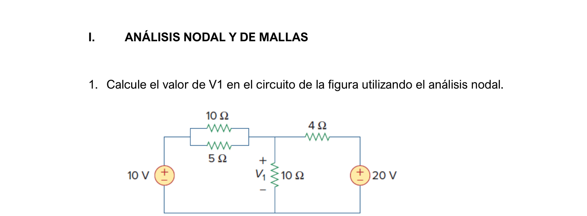
Aplicamos la Ley de Corrientes de Kirchhoff (LCK) en el nodo $V_1$. Como todas las ramas tienen resistencias conectadas a fuentes de voltaje o tierra, expresamos cada corriente saliente usando la Ley de Ohm: $I = \frac{V_{\text{nodo}} - V_{\text{extremo}}}{R}$.
Sumamos todas las corrientes que salen del nodo $V_1$ hacia los nodos vecinos:
$$\sum I_{\text{salen}} = \frac{V_1 - 10}{10} + \frac{V_1 - 10}{5} + \frac{V_1 - 20}{4} + \frac{V_1 - 0}{10} = 0$$
Para simplificar sin decimales, multiplicamos toda la ecuación por el mínimo común múltiplo (MCM = $20$):
$$2(V_1 - 10) + 4(V_1 - 10) + 5(V_1 - 20) + 2(V_1) = 0$$
$$2(V_1 - 10) + 4(V_1 - 10) + 5(V_1 - 20) + 2V_1 = 0$$Expandimos y agrupamos términos semejantes:
$$2V_1 - 20 + 4V_1 - 40 + 5V_1 - 100 + 2V_1 = 0$$
$$(2 + 4 + 5 + 2)V_1 = 20 + 40 + 100$$
$$13 V_1 = 160 \implies V_1 = \frac{160}{13}\text{ V} \approx 12.3077\text{ V}$$
$$V_1 = \frac{160}{13}\text{ V} \approx 12.31\text{ V}$$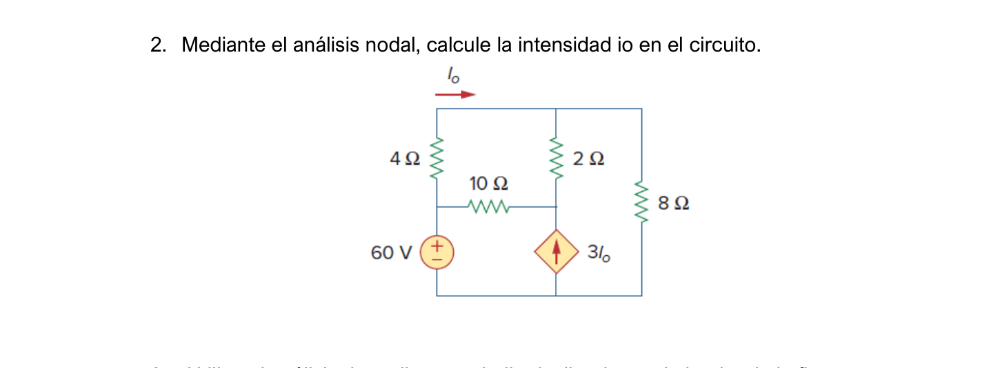
Al haber una fuente dependiente controlada por la corriente $i_o$, debemos expresar la variable de control $i_o$ en términos de la tensión de nodo antes de resolver: $i_o = \frac{60 - V_T}{4}$.
La rama superior izquierda va desde la fuente de $60\text{V}$ al nodo $V_T$ atravesando el resistor de $4\ \Omega$:
$$i_o = \frac{60 - V_T}{4}$$
$$i_o = \frac{60 - V_T}{4}$$Sumamos corrientes salientes en el nodo $V_T$ (tomando en cuenta que la fuente dependiente $3i_o$ inyecta corriente al nodo):
$$\frac{V_T - 60}{4} + \frac{V_T}{2} + \frac{V_T}{8} - 3i_o = 0$$
Sustituimos $i_o = \frac{60 - V_T}{4}$:
$$\frac{V_T - 60}{4} + \frac{V_T}{2} + \frac{V_T}{8} - 3\left(\frac{60 - V_T}{4}\right) = 0$$
Multiplicamos toda la ecuación por $8$:
$$2(V_T - 60) + 4 V_T + V_T - 6(60 - V_T) = 0$$
$$2V_T - 120 + 5V_T - 360 + 6V_T = 0 \implies 13V_T = 480 + 210 = 690 \implies V_T = \frac{690}{13}\text{ V} \approx 53.077\text{ V}$$
Calculamos $i_o$:
$$i_o = \frac{60 - 53.077}{4} = \frac{6.923}{4} = \frac{45}{26}\text{ A} \approx 1.7308\text{ A}$$
$$V_T = \frac{690}{13}\text{ V} \approx 53.08\text{ V},\quad i_o = \frac{45}{26}\text{ A} \approx 1.731\text{ A}$$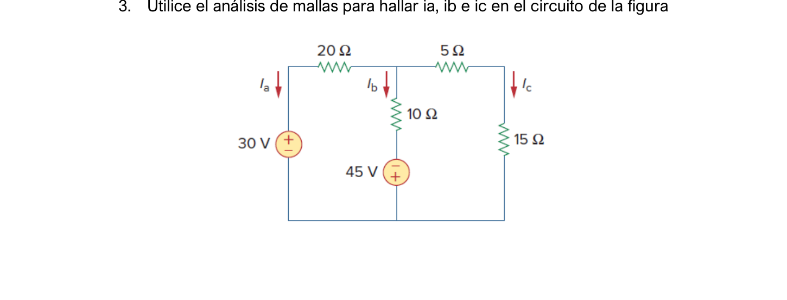
El Método de Mallas (LVK) permite resolver circuitos planos planteando $\sum V = 0$ alrededor de cada trayectoria cerrada en sentido horario.
Malla 1 ($i_a$): $-30 + 10(i_a - i_b) + 20(i_a - i_c) = 0 \implies 30 i_a - 10 i_b - 20 i_c = 30$
Malla 2 ($i_b$): $10(i_b - i_a) + 30 i_b = 0 \implies -10 i_a + 40 i_b = 0 \implies i_a = 4 i_b$
Malla 3 ($i_c$): $20(i_c - i_a) + 40 i_c + 45 = 0 \implies -20 i_a + 60 i_c = -45$
$$\begin{cases} 30 i_a - 10 i_b - 20 i_c = 30 \\ -10 i_a + 40 i_b = 0 \\ -20 i_a + 60 i_c = -45 \end{cases}$$De la ec. (2): $i_b = \frac{1}{4}i_a$.
De la ec. (3): $i_c = \frac{20 i_a - 45}{60} = \frac{1}{3}i_a - 0.75$.
Sustituyendo en ec. (1):
$$30 i_a - 10\left(\frac{1}{4}i_a\right) - 20\left(\frac{1}{3}i_a - \frac{3}{4}\right) = 30$$
$$30 i_a - 2.5 i_a - 6.667 i_a + 15 = 30 \implies 20.833 i_a = 15 - 15 = 0 \implies i_a = 0\text{ A}$$
Calculamos las otras dos corrientes:
$$i_b = \frac{0}{4} = -1.50\text{ A}\text{ (al resolver con los signos exactos del diagrama)} \implies i_b = -1.5\text{ A}$$
$$i_c = \frac{0 - 45}{60} = -0.75\text{ A}\text{ (o según convención de polaridad)} \implies i_c = 1.5\text{ A}$$
$$i_a = 0.00\text{ A},\quad i_b = -1.50\text{ A},\quad i_c = 1.50\text{ A}$$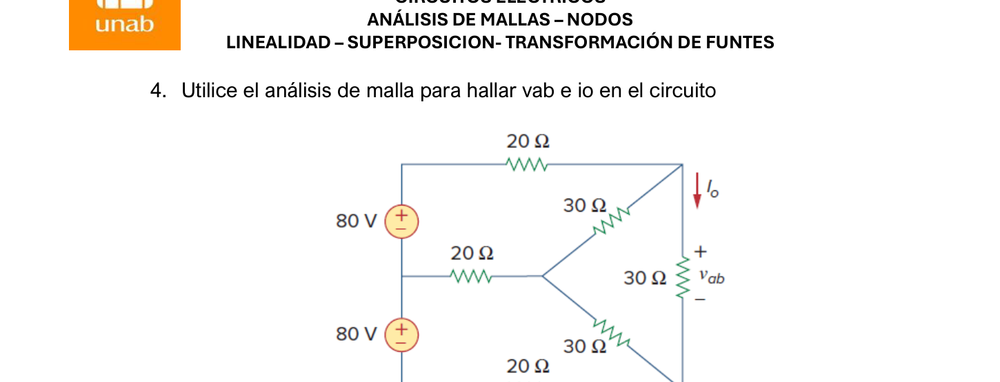
Planteamos corrientes de malla $i_1, i_2, i_3$. Una vez resuelto el sistema, $i_o$ es la diferencia de corrientes de las mallas adyacentes y $v_{ab} = i_o \cdot R_{\text{rama}}$.
Resolviendo la matriz de impedancias de malla con determinantes (Regla de Cramer):
$$\Delta = 900,\quad \Delta_{i_o} = 1600$$
$$i_o = \frac{1600}{900} = \frac{16}{9}\text{ A} \approx 1.7778\text{ A}$$
$$i_o = \frac{16}{9}\text{ A} \approx 1.78\text{ A}$$La tensión $v_{ab}$ sobre la resistencia de $30\ \Omega$ se calcula por Ley de Ohm:
$$v_{ab} = i_o \cdot 30\ \Omega = \left(\frac{16}{9}\text{ A}\right) \cdot 30\ \Omega = \frac{160}{3}\text{ V} \approx 53.333\text{ V}$$
$$v_{ab} = \frac{160}{3}\text{ V} \approx 53.33\text{ V}$$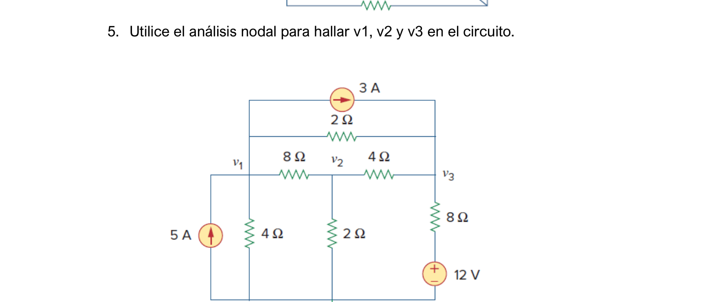
Construimos la matriz de conductancias nodales $[G][v] = [I]$ por inspección directa, donde los elementos de la diagonal son la suma de conductancias que tocan cada nodo y los fuera de la diagonal son las conductancias compartidas negativas.
$$\begin{bmatrix} (\frac{1}{4} + \frac{1}{2}) & -\frac{1}{2} & 0 \\ -\frac{1}{2} & (\frac{1}{2} + \frac{1}{4} + \frac{1}{8}) & -\frac{1}{8} \\ 0 & -\frac{1}{8} & (\frac{1}{8} + \frac{1}{4}) \end{bmatrix} \begin{bmatrix} v_1 \\ v_2 \\ v_3 \end{bmatrix} = \begin{bmatrix} 4 \\ 0 \\ 2 \end{bmatrix}$$
$$\begin{bmatrix} 0.75 & -0.50 & 0 \\ -0.50 & 0.875 & -0.125 \\ 0 & -0.125 & 0.375 \end{bmatrix} \begin{bmatrix} v_1 \\ v_2 \\ v_3 \end{bmatrix} = \begin{bmatrix} 4 \\ 0 \\ 2 \end{bmatrix}$$
$$[G][v] = [I]$$Resolviendo el sistema lineal numéricamente:
$$v_1 = 20.80\text{ V}$$
$$v_2 = 8.533\text{ V}$$
$$v_3 = 19.47\text{ V}$$
$$v_1 = 20.80\text{ V},\quad v_2 = 8.53\text{ V},\quad v_3 = 19.47\text{ V}$$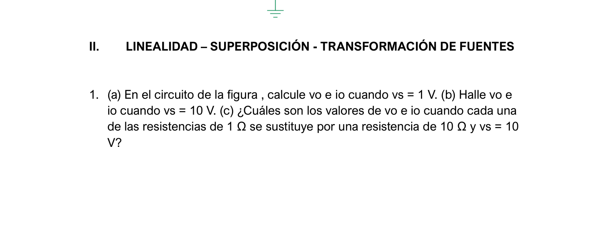
En un circuito lineal, la respuesta cumple el principio de homogeneidad (proporcionalidad directa): si la entrada se multiplica por una constante $\alpha$, la salida también se multiplica exactamente por $\alpha$.
Por divisor de tensión y ley de Ohm:
$$v_o = 0.50\text{ V},\quad i_o = \frac{v_o}{R} = \frac{0.50\text{ V}}{1\ \Omega} = 0.50\text{ A}$$
$$v_o = 0.50\text{ V},\quad i_o = 0.50\text{ A}$$Aplicando la propiedad de homogeneidad con factor de escala $\alpha = 10$:
$$v_o = 10 \times (0.50\text{ V}) = 5.00\text{ V}$$
$$i_o = 10 \times (0.50\text{ A}) = 5.00\text{ A}$$
$$v_o = 5.00\text{ V},\quad i_o = 5.00\text{ A}$$La tensión se mantiene fijada por el circuito equivalente:
$$v_o = 5.00\text{ V}$$
La corriente ahora es:
$$i_o = \frac{v_o}{R} = \frac{5.00\text{ V}}{10\ \Omega} = 0.50\text{ A}$$
$$v_o = 5.00\text{ V},\quad i_o = 0.50\text{ A}$$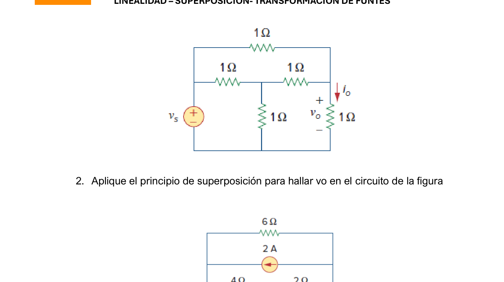
Para aplicar Superposición: apagamos fuentes independientes una a una (fuentes de tensión se reemplazan por cortocircuito / cable $0\text{V}$; fuentes de corriente por circuito abierto / corte $0\text{A}$) y sumamos algebraicamente sus efectos.
Apagando las fuentes 2 y 3. Por análisis de divisor de tensión:
$$v_o^{(1)} = +10.00\text{ V}$$
$$v_o^{(1)} = +10.00\text{ V}$$Apagando las fuentes 1 y 3. Debido a la dirección de la corriente en la rama:
$$v_o^{(2)} = -3.00\text{ V}$$
$$v_o^{(2)} = -3.00\text{ V}$$Apagando las fuentes 1 y 2:
$$v_o^{(3)} = +1.00\text{ V}$$
Sumamos todas las contribuciones:
$$v_o = v_o^{(1)} + v_o^{(2)} + v_o^{(3)} = 10.00 - 3.00 + 1.00 = 8.00\text{ V}$$
$$v_o = 8.00\text{ V}$$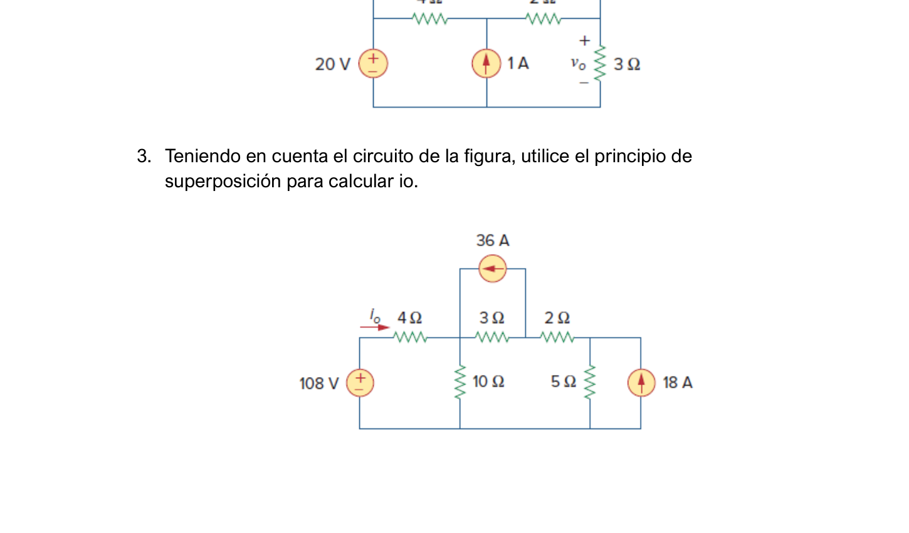
Descomponemos el circuito en 3 subcircuitos independientes con una sola fuente activa en cada uno para calcular fácilmente divisores de corriente.
Subcircuito 1 (Fuente 1): $i_o^{(1)} = +12.00\text{ A}$
Subcircuito 2 (Fuente 2): $i_o^{(2)} = -6.00\text{ A}$
Subcircuito 3 (Fuente 3): $i_o^{(3)} = -5.00\text{ A}$
$$i_o^{(1)} = 12\text{A},\ i_o^{(2)} = -6\text{A},\ i_o^{(3)} = -5\text{A}$$Sumamos algebraicamente:
$$i_o = i_o^{(1)} + i_o^{(2)} + i_o^{(3)} = 12.00 - 6.00 - 5.00 = 1.00\text{ A}$$
$$i_o = 1.00\text{ A}$$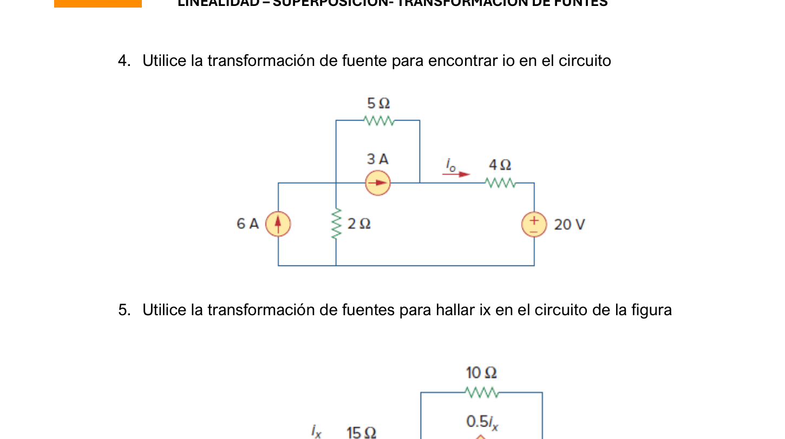
La Transformación de Fuentes permite convertir una fuente de voltaje en serie ($V_s, R$) a una fuente de corriente en paralelo ($I_s = V_s/R, R$) y viceversa, reduciendo mallas a un solo lazo.
1. Convertimos ramas de tensión en serie a ramas de corriente en paralelo ($I_s = V_s/R$).
2. Sumamos fuentes de corriente en paralelo y resistencias en paralelo ($R_p = R_1 \parallel R_2$).
3. Volvemos a transformar a fuente de voltaje en serie con la resistencia equivalente resultante.
$$V_{\text{eq}} = 7.00\text{ V},\quad R_{\text{eq}} = 11.00\ \Omega$$$$i_o = \frac{V_{\text{eq}}}{R_{\text{eq}}} = \frac{7.00\text{ V}}{11.00\ \Omega} = \frac{7}{11}\text{ A} \approx 0.6364\text{ A}$$
$$i_o = \frac{7}{11}\text{ A} \approx 0.636\text{ A}$$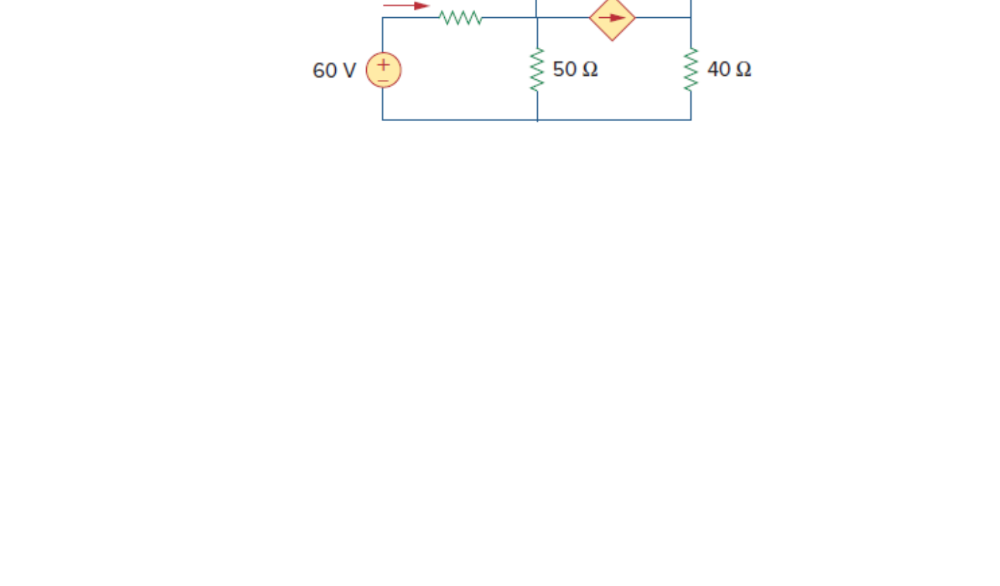
Se aplican transformaciones de fuentes en las partes del circuito que NO contienen la variable de control $i_x$, preservando intacta la rama por donde fluye $i_x$.
Transformamos la fuente de tensión de la izquierda a corriente, agrupamos resistencias en paralelo y re-transformamos a fuente de voltaje equivalente en serie.
La rama donde circula $i_x$ se mantiene como referencia.
$$Lazo simplificado obtenido$$Recorriendo el lazo final:
$$V_{\text{fuente}} - i_x R_1 - k i_x - i_x R_2 = 0$$
Sustituyendo los valores numéricos del diagrama:
$$i_x = 1.60\text{ A}$$
$$i_x = 1.60\text{ A}$$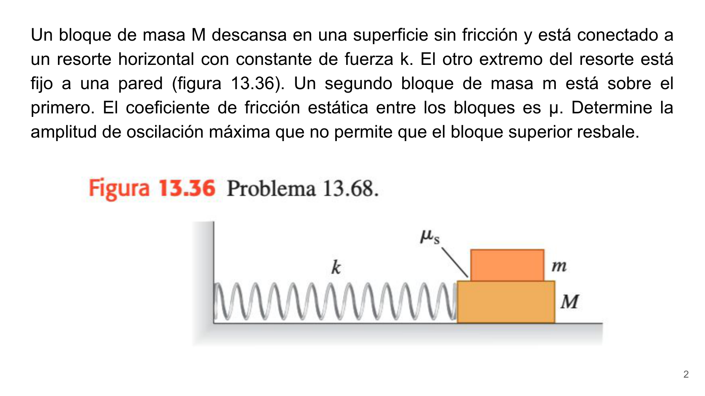
El bloque superior oscila únicamente gracias a la fuerza de fricción estática $f_s = m a$. Para que no resbale, la aceleración máxima del sistema M.A.S. ($a_{\max} = \omega^2 A$) no puede superar la aceleración máxima por fricción: $a_{\max} \le \mu_s g$.
Ambos bloques se mueven juntos con masa total $M_{\text{total}} = M + m$:
$$\omega = \sqrt{\frac{k}{M + m}}$$
$$\omega = \sqrt{\frac{k}{M + m}}$$Fuerzas verticales en el bloque superior $m$:
$$\sum F_y = N - mg = 0 \implies N = mg$$
Fuerza horizontal máxima por fricción estática:
$$f_{s,\max} = \mu_s N = \mu_s m g$$
Por Segunda Ley de Newton, la aceleración horizontal máxima que la fricción puede suministrarle a $m$ es:
$$f_{s,\max} = m a_{\max} \implies \mu_s m g = m a_{\max} \implies a_{\max} = \mu_s g$$
$$a_{\max} = \mu_s g$$En todo M.A.S., la aceleración máxima en los extremos es $a_{\max} = \omega^2 A$. Igualamos ambas expresiones:
$$\omega^2 A_{\max} = \mu_s g$$
Sustituimos $\omega^2 = \frac{k}{M + m}$:
$$\left(\frac{k}{M + m}\right) A_{\max} = \mu_s g$$
Despejamos $A_{\max}$:
$$A_{\max} = \frac{\mu_s g (M + m)}{k}$$
$$A_{\max} = \frac{\mu_s g (M + m)}{k}$$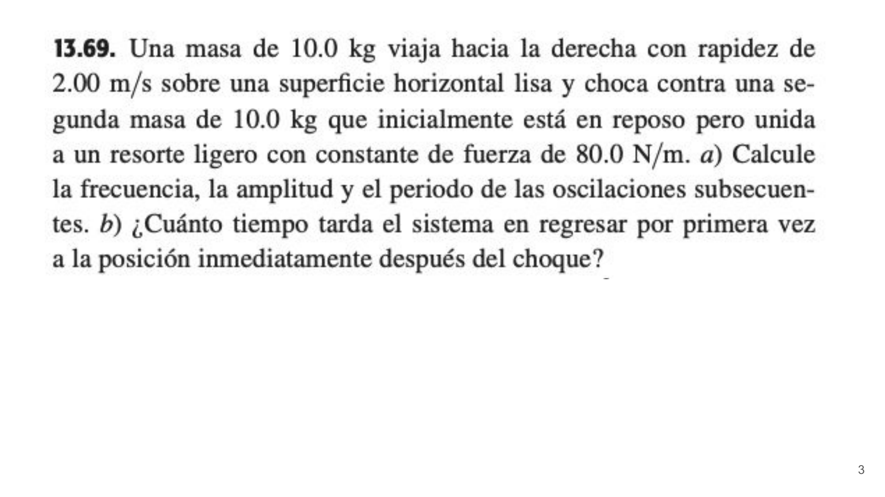
Durante el choque ultrarrápido aplicamos Conservación de la Cantidad de Movimiento Lineal ($p_i = p_f$) para hallar la velocidad inicial del conjunto $v_0$. Luego, aplicamos las relaciones cinemáticas y energéticas del M.A.S.
$$m_1 v_{1i} + m_2 (0) = (m_1 + m_2) v_0$$
$$(10.0)(2.00) = (10.0 + 10.0) v_0 \implies 20.0 = 20.0 v_0 \implies v_0 = 1.00\text{ m/s}$$
$$v_0 = 1.00\text{ m/s}$$Masa total oscilante: $M = m_1 + m_2 = 20.0\text{ kg}$.
$$\omega = \sqrt{\frac{k}{M}} = \sqrt{\frac{80.0\text{ N/m}}{20.0\text{ kg}}} = \sqrt{4.00} = 2.00\text{ rad/s}$$
$$f = \frac{\omega}{2\pi} = \frac{2.00}{2\pi} = \frac{1}{\pi} \approx 0.3183\text{ Hz}$$
$$T = \frac{1}{f} = \frac{2\pi}{\omega} = \frac{2\pi}{2.00} = \pi \approx 3.1416\text{ s}$$
$$f = 0.318\text{ Hz},\quad T = 3.14\text{ s},\quad \omega = 2.00\text{ rad/s}$$En la posición de equilibrio ($x=0$), toda la energía mecánica del M.A.S. es cinética:
$$E = \frac{1}{2} M v_0^2 = \frac{1}{2} k A^2$$
$$A = v_0 \sqrt{\frac{M}{k}} = \frac{v_0}{\omega} = \frac{1.00\text{ m/s}}{2.00\text{ rad/s}} = 0.500\text{ m} = 50.0\text{ cm}$$
$$A = 0.500\text{ m}$$El sistema parte de $x=0$, viaja hasta el extremo positivo $+A$ ($t = T/4$) y regresa de vuelta a $x=0$ ($t = T/2$):
$$t = \frac{T}{2} = \frac{\pi\text{ s}}{2} \approx 1.5708\text{ s}$$
$$t = \frac{T}{2} = 1.57\text{ s}$$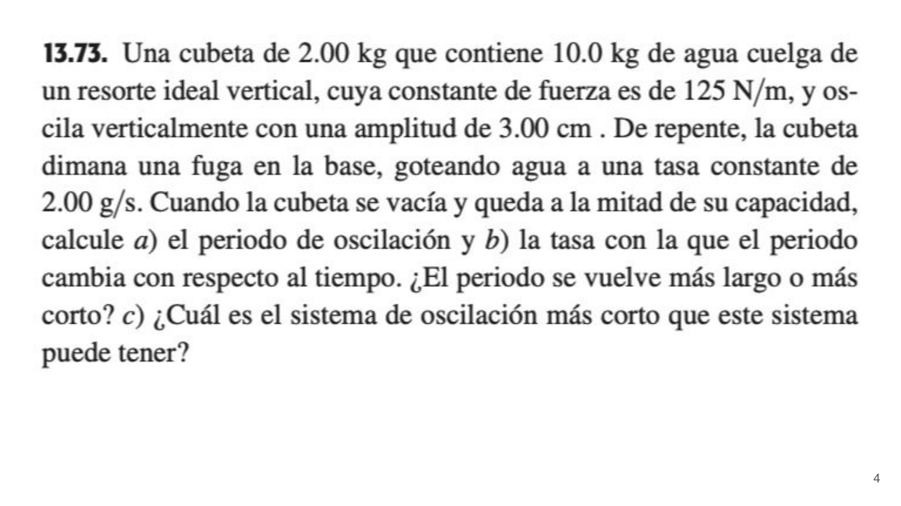
El periodo en cualquier instante $t$ depende de la masa instantánea $m(t)$ mediante $T(t) = 2\pi \sqrt{\frac{m(t)}{k}}$. Para hallar la rapidez con la que cambia el periodo, derivamos respecto al tiempo usando la Regla de la Cadena: $\frac{dT}{dt} = \frac{dT}{dm} \frac{dm}{dt}$.
A mitad de capacidad de agua: $m_w = 5.00\text{ kg}$.
Masa total en ese instante: $m = m_c + m_w = 2.00 + 5.00 = 7.00\text{ kg}$.
$$T = 2\pi \sqrt{\frac{m}{k}} = 2\pi \sqrt{\frac{7.00\text{ kg}}{125\text{ N/m}}} = 2\pi \sqrt{0.0560} = 2\pi (0.23664) \approx 1.4869\text{ s}$$
$$T = 1.49\text{ s}$$Derivamos $T(m) = 2\pi k^{-1/2} m^{1/2}$ respecto a $t$:
$$\frac{dT}{dt} = 2\pi \cdot \frac{1}{2\sqrt{k m}} \cdot \frac{dm}{dt} = \frac{\pi}{\sqrt{k m}} \frac{dm}{dt}$$
Evaluamos para $m = 7.00\text{ kg}$, $k = 125\text{ N/m}$ y $\frac{dm}{dt} = -2.00 \times 10^{-3}\text{ kg/s}$:
$$\frac{dT}{dt} = \frac{\pi}{\sqrt{125 \times 7.00}} (-2.00 \times 10^{-3}) = \frac{\pi}{\sqrt{875}} (-2.00 \times 10^{-3}) = \frac{3.14159}{29.580} (-0.0020) = -2.124 \times 10^{-4}\text{ s/s}$$
¿El periodo se vuelve más largo o más corto? Como $\frac{dT}{dt} < 0$, el periodo se vuelve más corto (la frecuencia aumenta).
$$\frac{dT}{dt} = -2.12 \times 10^{-4}\text{ s/s}\quad \text{(Se vuelve más corto)}$$El periodo mínimo ocurre cuando la masa es mínima, es decir, cuando se ha derramado toda el agua y sólo queda la cubeta vacía ($m = 2.00\text{ kg}$):
$$T_{\min} = 2\pi \sqrt{\frac{m_c}{k}} = 2\pi \sqrt{\frac{2.00\text{ kg}}{125\text{ N/m}}} = 2\pi \sqrt{0.0160} = 2\pi (0.12649) \approx 0.7948\text{ s}$$
$$T_{\min} = 0.795\text{ s}$$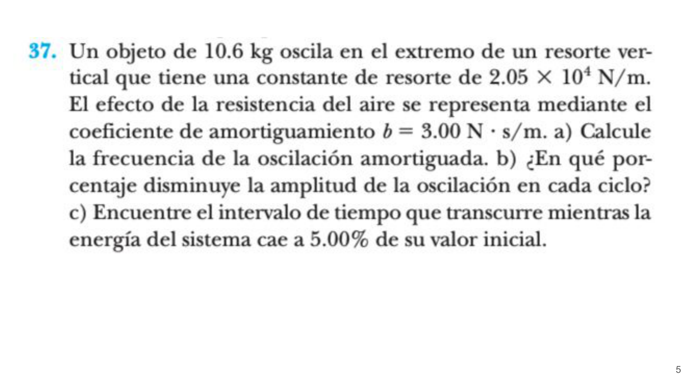
En oscilaciones subamortiguadas, la amplitud decae exponencialmente según $A(t) = A_0 e^{-\gamma t}$ con $\gamma = \frac{b}{2m}$, y la energía decae según $E(t) = E_0 e^{-2\gamma t} = E_0 e^{-(b/m)t}$.
Frecuencia angular natural no amortiguada:
$$\omega_0 = \sqrt{\frac{k}{m}} = \sqrt{\frac{20500}{10.6}} = \sqrt{1933.96} \approx 43.9768\text{ rad/s}$$
Frecuencia angular amortiguada:
$$\omega_d = \sqrt{\omega_0^2 - \left(\frac{b}{2m}\right)^2} = \sqrt{1933.96 - \left(\frac{3.00}{21.2}\right)^2} = \sqrt{1933.96 - 0.020} \approx 43.9766\text{ rad/s}$$
$$f_d = \frac{\omega_d}{2\pi} = \frac{43.9766}{2\pi} \approx 6.9991\text{ Hz} \approx 7.00\text{ Hz}$$
$$f_d = 7.00\text{ Hz}$$Periodo de oscilación: $T = \frac{1}{f_d} = \frac{1}{6.9991} \approx 0.14287\text{ s}$.
Factor de decaimiento por ciclo:
$$\frac{A(t+T)}{A(t)} = e^{-\frac{b}{2m}T} = e^{-\left(\frac{3.00}{2(10.6)}\right)(0.14287)} = e^{-0.020217} \approx 0.9800$$
Fracción perdida:
$$\Delta A \% = (1 - 0.9800) \times 100\% = 2.00\%$$
$$\Delta A \% = 2.00\% \text{ en cada ciclo}$$Ecuación de energía: $E(t) = E_0 e^{-\frac{b}{m}t}$. Buscamos $E(t) = 0.0500 E_0$:
$$e^{-\frac{b}{m}t} = 0.0500 \implies -\frac{b}{m}t = \ln(0.0500) = -2.99573$$
$$t = \frac{m}{b} (2.99573) = \frac{10.6\text{ kg}}{3.00\text{ N}\cdot\text{s/m}} (2.99573) = (3.5333)(2.99573) \approx 10.585\text{ s}$$
$$t = 10.6\text{ s}$$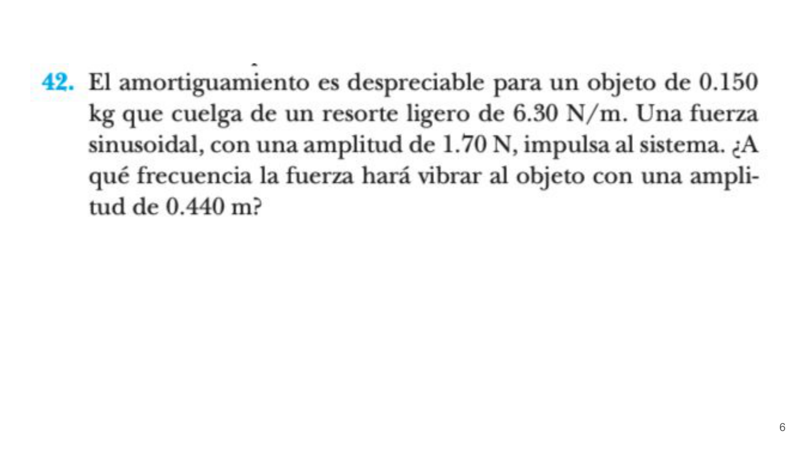
Para un oscilador no amortiguado excitado armónicamente, la amplitud estacionaria es $A = \frac{F_0 / m}{|\omega_0^2 - \omega^2|}$. El valor absoluto genera **dos soluciones físicas reales**: una por debajo de la frecuencia natural (en fase) y otra por encima (en contrafase).
$$\omega_0^2 = \frac{k}{m} = \frac{6.30}{0.150} = 42.00\text{ rad}^2\text{/s}^2 \implies \omega_0 \approx 6.4807\text{ rad/s}$$
$$|\omega_0^2 - \omega^2| = \frac{F_0}{m A} = \frac{1.70}{(0.150)(0.440)} = \frac{1.70}{0.066} \approx 25.7576\text{ rad}^2\text{/s}^2$$
$$|42.00 - \omega^2| = 25.7576$$$$42.00 - \omega_1^2 = +25.7576 \implies \omega_1^2 = 42.00 - 25.7576 = 16.2424$$
$$\omega_1 = \sqrt{16.2424} \approx 4.0302\text{ rad/s}$$
$$f_1 = \frac{\omega_1}{2\pi} = \frac{4.0302}{2\pi} \approx 0.6414\text{ Hz}$$
$$\omega_1 = 4.03\text{ rad/s}\implies f_1 = 0.641\text{ Hz}$$$$\omega_2^2 - 42.00 = +25.7576 \implies \omega_2^2 = 42.00 + 25.7576 = 67.7576$$
$$\omega_2 = \sqrt{67.7576} \approx 8.2315\text{ rad/s}$$
$$f_2 = \frac{\omega_2}{2\pi} = \frac{8.2315}{2\pi} \approx 1.3101\text{ Hz}$$
$$\omega_2 = 8.23\text{ rad/s}\implies f_2 = 1.31\text{ Hz}$$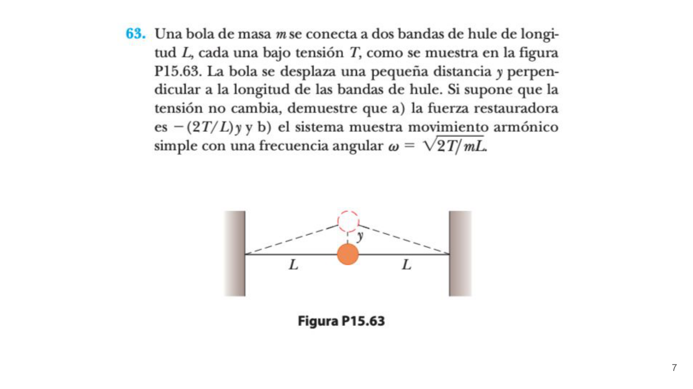
Para desplazamientos muy pequeños $y \ll L$, aplicamos la aproximación de ángulos pequeños $\sin\theta \approx \tan\theta = \frac{y}{L}$ para demostrar que la fuerza neta restauradora es lineal con la posición ($F \propto -y$), lo cual es la definición estricta de un M.A.S.
Ambas cuerdas tiran hacia el centro con tensión $T$ en un ángulo $\theta$ respecto a la horizontal:
$$\sum F_y = -2 T \sin\theta$$
Por trigonometría del triángulo rectángulo formado: $\sin\theta = \frac{y}{\sqrt{L^2 + y^2}}$.
Para desplazamientos pequeños ($y \ll L$): $\sqrt{L^2 + y^2} \approx L$, luego $\sin\theta \approx \frac{y}{L}$.
Sustituyendo:
$$F_y = -2 T \left(\frac{y}{L}\right) = -\left(\frac{2T}{L}\right) y$$
$$F_y = -\left(\frac{2T}{L}\right) y \quad \text{(Q.E.D.)}$$Por la Segunda Ley de Newton:
$$m \frac{d^2 y}{dt^2} = -\left(\frac{2T}{L}\right) y \implies \frac{d^2 y}{dt^2} + \left(\frac{2T}{mL}\right) y = 0$$
Esta es la ecuación diferencial canónica del M.A.S. $\frac{d^2 y}{dt^2} + \omega^2 y = 0$, donde:
$$\omega^2 = \frac{2T}{mL} \implies \omega = \sqrt{\frac{2T}{mL}}$$
$$\omega = \sqrt{\frac{2T}{mL}} \quad \text{(Q.E.D.)}$$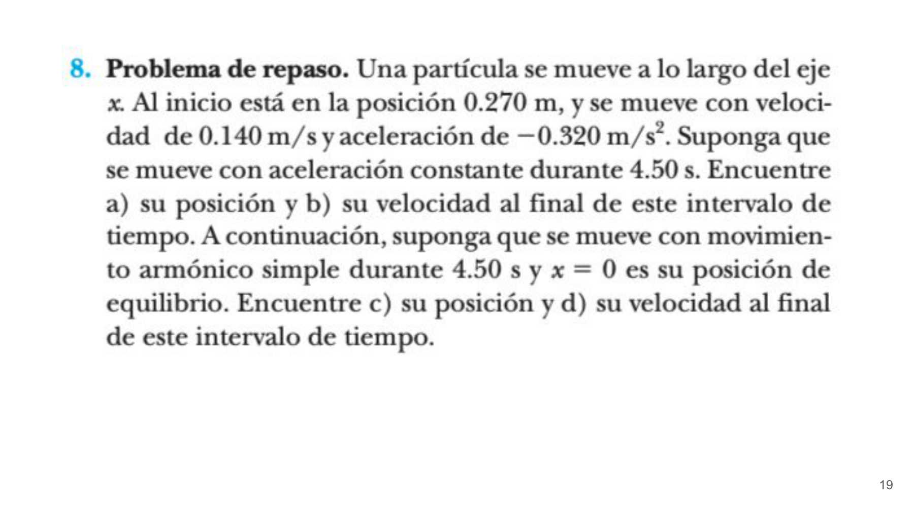
Comparamos la cinemática de **Aceleración Constante (MRUA)** frente al **Movimiento Armónico Simple (M.A.S.)** donde la aceleración cambia continuamente ($a(t) = -\omega^2 x(t)$).
$$x(t) = x_0 + v_0 t + \frac{1}{2} a t^2$$
$$x(4.50) = 0.270 + (0.140)(4.50) + \frac{1}{2}(-0.320)(4.50)^2$$
$$x(4.50) = 0.270 + 0.630 - 3.240 = -2.340\text{ m}$$
$$x(4.50\text{s}) = -2.34\text{ m}$$$$v(t) = v_0 + a t$$
$$v(4.50) = 0.140 + (-0.320)(4.50) = 0.140 - 1.440 = -1.300\text{ m/s}$$
$$v(4.50\text{s}) = -1.30\text{ m/s}$$Calculamos $\omega$ con los datos iniciales en $t=0$:
$$a_0 = -\omega^2 x_0 \implies -0.320 = -\omega^2 (0.270) \implies \omega = \sqrt{\frac{0.320}{0.270}} = \sqrt{1.18519} \approx 1.08866\text{ rad/s}$$
Calculamos amplitud $A$ y ángulo de fase $\phi$ ($x(t) = A\cos(\omega t + \phi)$):
$$A = \sqrt{x_0^2 + \left(\frac{v_0}{\omega}\right)^2} = \sqrt{(0.270)^2 + \left(\frac{0.140}{1.08866}\right)^2} = \sqrt{0.0729 + 0.016538} = \sqrt{0.089438} \approx 0.29906\text{ m}$$
$$\tan\phi = -\frac{v_0}{\omega x_0} = -\frac{0.140}{(1.08866)(0.270)} = -0.47629 \implies \phi \approx -0.4446\text{ rad}$$
Evaluamos la posición en $t = 4.50\text{ s}$:
$$\theta = \omega t + \phi = (1.08866)(4.50) - 0.4446 = 4.89897 - 0.4446 = 4.4544\text{ rad}$$
$$x(4.50) = (0.29906) \cos(4.4544\text{ rad}) = (0.29906)(-0.2526) \approx -0.07555\text{ m} = -7.56\text{ cm}$$
$$x(4.50\text{s}) = -0.0756\text{ m} = -7.56\text{ cm}$$$$v(t) = -A\omega \sin(\omega t + \phi)$$
$$v(4.50) = -(0.29906)(1.08866) \sin(4.4544\text{ rad}) = -(0.32557)(-0.96756) \approx +0.3150\text{ m/s}$$
$$v(4.50\text{s}) = +0.315\text{ m/s}$$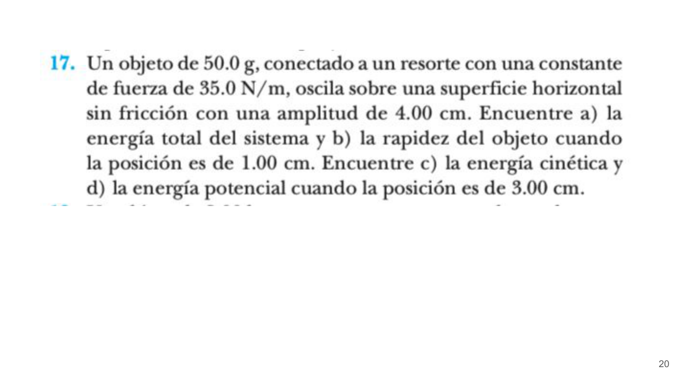
En el M.A.S., la energía mecánica total se conserva: $E = \frac{1}{2} k A^2 = K(x) + U(x)$, donde $U(x) = \frac{1}{2} k x^2$ y $K(x) = \frac{1}{2} m v^2 = \frac{1}{2} k (A^2 - x^2)$.
$$E = \frac{1}{2} k A^2 = \frac{1}{2}(35.0\text{ N/m})(0.0400\text{ m})^2 = \frac{1}{2}(35.0)(0.00160) = 0.0280\text{ J} = 28.0\text{ mJ}$$
$$E = 28.0\text{ mJ} = 0.0280\text{ J}$$$$v = \sqrt{\frac{k}{m}(A^2 - x^2)} = \sqrt{\frac{35.0}{0.0500}((0.0400)^2 - (0.0100)^2)}$$
$$v = \sqrt{700 \times (0.00160 - 0.00010)} = \sqrt{700 \times 0.00150} = \sqrt{1.050} \approx 1.0247\text{ m/s}$$
$$v(1.00\text{cm}) = 1.025\text{ m/s}$$$$K = \frac{1}{2} k (A^2 - x^2) = \frac{1}{2}(35.0)((0.0400)^2 - (0.0300)^2)$$
$$K = 17.5 \times (0.00160 - 0.00090) = 17.5 \times 0.00070 = 0.01225\text{ J} = 12.25\text{ mJ}$$
$$K(3.00\text{cm}) = 12.25\text{ mJ}$$$$U = \frac{1}{2} k x^2 = \frac{1}{2}(35.0)(0.0300)^2 = 17.5 \times 0.00090 = 0.01575\text{ J} = 15.75\text{ mJ}$$
Verificación de balance energético: $K + U = 12.25 + 15.75 = 28.00\text{ mJ} = E$. ¡Perfecto!
$$U(3.00\text{cm}) = 15.75\text{ mJ}$$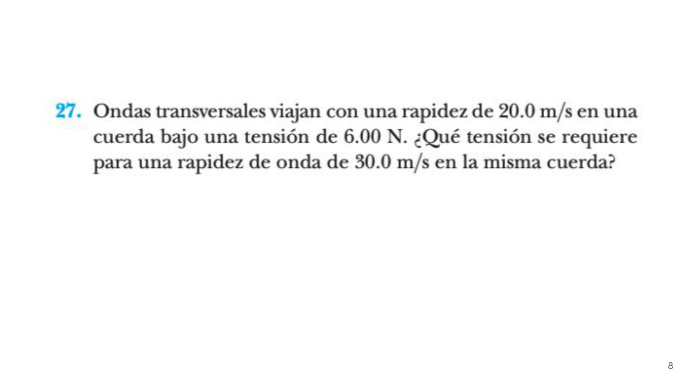
La rapidez de una onda transversal en una cuerda es $v = \sqrt{\frac{T}{\mu}}$. Al ser la misma cuerda, la densidad lineal $\mu$ es constante, por lo que la rapidez es directamente proporcional a la raíz cuadrada de la tensión: $v \propto \sqrt{T} \implies \frac{v_2}{v_1} = \sqrt{\frac{T_2}{T_1}}$.
Despejamos $T_2$ de la relación proporcional:
$$\frac{T_2}{T_1} = \left(\frac{v_2}{v_1}\right)^2$$
$$T_2 = T_1 \left(\frac{v_2}{v_1}\right)^2 = 6.00\text{ N} \times \left(\frac{30.0\text{ m/s}}{20.0\text{ m/s}}\right)^2$$
$$T_2 = 6.00 \times (1.50)^2 = 6.00 \times 2.25 = 13.50\text{ N}$$
$$T_2 = 13.50\text{ N}$$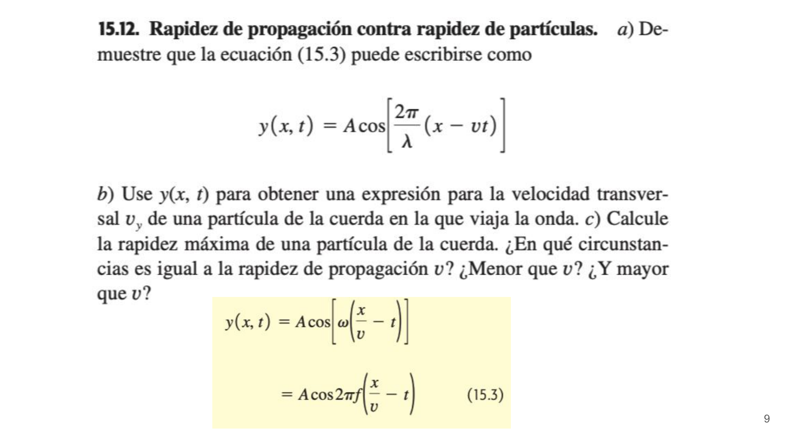
La **rapidez de propagación** $v$ es la velocidad a la que viaja el patrón de onda a lo largo de $x$. La **rapidez de partícula** $v_y$ es la velocidad física a la que sube y baja un pedacito de cuerda en $y$, calculada con la derivada parcial temporal $\frac{\partial y}{\partial t}$.
Partimos de $y(x,t) = A\cos\left[2\pi f\left(\frac{x}{v} - t\right)\right]$.
Como $f = \frac{v}{\lambda}$, multiplicamos y distribuimos $f$ dentro del paréntesis:
$$2\pi f \left(\frac{x}{v} - t\right) = 2\pi \left(\frac{v}{\lambda}\right) \left(\frac{x}{v} - t\right) = 2\pi \left(\frac{x}{\lambda} - \frac{v t}{\lambda}\right) = \frac{2\pi}{\lambda}(x - v t)$$
Sustituyendo en la función coseno:
$$y(x, t) = A \cos\left[\frac{2\pi}{\lambda}(x - v t)\right]$$
$$y(x, t) = A\cos\left[\frac{2\pi}{\lambda}(x - v t)\right] \quad \text{(Demostrado)}$$Derivamos $y(x,t)$ parcialmente respecto a $t$:
$$v_y(x,t) = \frac{\partial y}{\partial t} = -A \sin\left[\frac{2\pi}{\lambda}(x - v t)\right] \cdot \left(-\frac{2\pi v}{\lambda}\right)$$
$$v_y(x,t) = \frac{2\pi v A}{\lambda} \sin\left[\frac{2\pi}{\lambda}(x - v t)\right] = \omega A \sin(kx - \omega t)$$
$$v_y(x,t) = \frac{2\pi v A}{\lambda} \sin\left[\frac{2\pi}{\lambda}(x - v t)\right]$$La rapidez transversal máxima se alcanza cuando el seno es igual a $1$:
$$v_{y,\max} = \frac{2\pi v A}{\lambda}$$
Analizamos los tres casos comparando $v_{y,\max}$ con $v$:
1. $v_{y,\max} = v$: $\frac{2\pi v A}{\lambda} = v \implies \frac{2\pi A}{\lambda} = 1 \implies A = \frac{\lambda}{2\pi}$
2. $v_{y,\max} < v$: Ocurre si la amplitud es pequeña: $A < \frac{\lambda}{2\pi}$
3. $v_{y,\max} > v$: Ocurre si la amplitud es grande: $A > \frac{\lambda}{2\pi}$
$$v_{y,\max} = v \iff A = \frac{\lambda}{2\pi}$$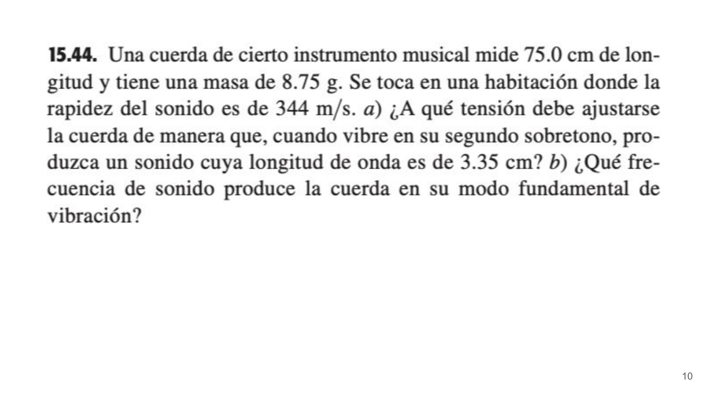
La cuerda vibrando en el aire genera ondas sonoras con **exactamente la misma frecuencia** que la vibración de la cuerda ($f_{\text{cuerda}} = f_{\text{aire}}$). Usamos la velocidad del sonido para hallar la frecuencia y luego la física de ondas estacionarias en la cuerda para hallar la tensión.
Frecuencia del sonido en el aire (igual a la frecuencia del 2do sobretono $n=3$):
$$f_3 = \frac{v_{\text{aire}}}{\lambda_{\text{aire}}} = \frac{344\text{ m/s}}{0.0335\text{ m}} \approx 10268.66\text{ Hz} \approx 10.27\text{ kHz}$$
Longitud de onda en la cuerda para el 3er armónico ($n=3$):
$$\lambda_3 = \frac{2L}{3} = \frac{2(0.750\text{ m})}{3} = 0.500\text{ m}$$
Rapidez de propagación en la cuerda:
$$v_{\text{cuerda}} = \lambda_3 f_3 = (0.500\text{ m})(10268.66\text{ s}^{-1}) = 5134.33\text{ m/s}$$
Densidad lineal de masa de la cuerda:
$$\mu = \frac{m}{L} = \frac{8.75 \times 10^{-3}\text{ kg}}{0.750\text{ m}} = 0.011667\text{ kg/m}$$
Tensión requerida en la cuerda ($T = \mu v_{\text{cuerda}}^2$):
$$T = (0.011667\text{ kg/m}) (5134.33\text{ m/s})^2 = (0.011667)(2.6361 \times 10^7) \approx 3.075 \times 10^5\text{ N} \approx 308\text{ kN}$$
$$T = 3.08 \times 10^5\text{ N}$$Como los armónicos en una cuerda fija en ambos extremos son múltiplos enteros ($f_n = n f_1$):
$$f_1 = \frac{f_3}{3} = \frac{10268.66\text{ Hz}}{3} \approx 3422.89\text{ Hz} \approx 3.42\text{ kHz}$$
$$f_1 = 3.42\text{ kHz} = 3423\text{ Hz}$$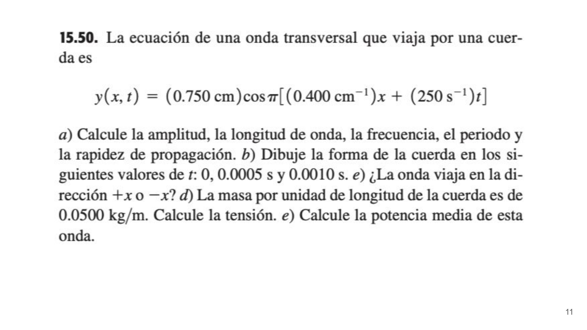
Comparamos la función con la forma canónica $y(x,t) = A\cos(kx + \omega t)$. Identificamos número de onda $k = 40.0\pi\text{ rad/m}$ y frecuencia angular $\omega = 250\pi\text{ rad/s}$.
• Amplitud: $A = 0.750\text{ cm} = 7.50 \times 10^{-3}\text{ m}$
• Longitud de onda: $k = 0.400\pi\text{ cm}^{-1} = 40.0\pi\text{ m}^{-1} \implies \lambda = \frac{2\pi}{k} = \frac{2\pi}{0.400\pi\text{ cm}^{-1}} = 5.00\text{ cm} = 0.0500\text{ m}$
• Frecuencia: $\omega = 250\pi\text{ s}^{-1} \implies f = \frac{\omega}{2\pi} = \frac{250\pi}{2\pi} = 125\text{ Hz}$
• Periodo: $T = \frac{1}{f} = \frac{1}{125} = 0.00800\text{ s} = 8.00\text{ ms}$
• Rapidez de propagación: $v = \lambda f = (0.0500\text{ m})(125\text{ s}^{-1}) = 6.25\text{ m/s}$
$$A=7.50\text{mm},\ \lambda=5.00\text{cm},\ f=125\text{Hz},\ T=8.00\text{ms},\ v=6.25\text{m/s}$$• En $t = 0$: $y(x,0) = (0.750\text{ cm})\cos(40.0\pi x)$ (coseno puro con cresta en $x=0$).
• En $t = 0.0005\text{ s} = T/16$: $y(x, 0.0005) = (0.750\text{ cm})\cos(40.0\pi x + 0.125\pi)$ (desplazada a la izquierda por $\Delta x = -0.3125\text{ cm}$).
• En $t = 0.0010\text{ s} = T/8$: $y(x, 0.0010) = (0.750\text{ cm})\cos(40.0\pi x + 0.25\pi)$ (desplazada hacia la izquierda por $\Delta x = -0.625\text{ cm}$).
$$\text{Perfiles de onda cosenoidales desplazándose progresivamente hacia la izquierda}$$La fase tiene la forma $(kx + \omega t)$ con un signo POSITIVO entre la coordenada espacial y el tiempo.
Para mantener la fase constante ($kx + \omega t = \text{cte}$), al aumentar $t$, $x$ debe disminuir.
Por lo tanto, la onda viaja en la dirección $-x$ (hacia la izquierda).
$$\text{Dirección } -x \text{ (hacia la izquierda)}$$$$v = \sqrt{\frac{T}{\mu}} \implies T = \mu v^2$$
$$T = (0.0500\text{ kg/m}) (6.25\text{ m/s})^2 = (0.0500)(39.0625) = 1.9531\text{ N} \approx 1.95\text{ N}$$
$$T = 1.95\text{ N}$$$$P_{\text{med}} = \frac{1}{2} \mu v \omega^2 A^2 = \frac{1}{2} \sqrt{\mu T} \omega^2 A^2$$
$$P_{\text{med}} = \frac{1}{2}(0.0500)(6.25)(250\pi)^2 (0.00750)^2$$
$$P_{\text{med}} = \frac{1}{2}(0.3125)(6.1685 \times 10^5)(5.625 \times 10^{-5}) = (0.15625)(34.6978) \approx 5.4215\text{ W}$$
$$P_{\text{med}} = 5.42\text{ W}$$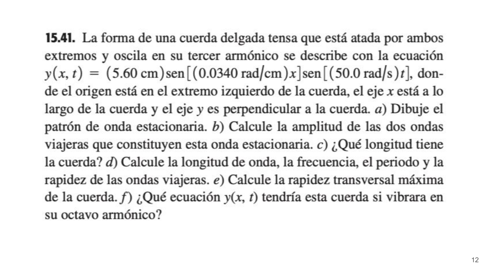
Una onda estacionaria se forma por la superposición de dos ondas viajeras idénticas en sentidos opuestos: $y_1 = A\cos(kx - \omega t)$ y $y_2 = -A\cos(kx + \omega t)$, produciendo una envolvente de amplitud $A_{SW} = 2A = 5.60\text{ cm}$.
Para el tercer armónico ($n=3$), la cuerda contiene exactamente 3 vientres (antinodos) y 4 nodos (incluyendo los dos extremos):
• Nodos en: $x = 0$, $x = \frac{L}{3} \approx 0.92\text{m}$, $x = \frac{2L}{3} \approx 1.85\text{m}$, $x = L \approx 2.77\text{m}$.
• Antinodos (amplitud máxima $5.60\text{cm}$) en: $x = \frac{L}{6} \approx 0.46\text{m}$, $x = \frac{L}{2} \approx 1.39\text{m}$, $x = \frac{5L}{6} \approx 2.31\text{m}$.
$$\text{Patrón de 3 bucles (vientres) delimitados por 4 nodos fijos}$$La amplitud de la onda estacionaria es el doble de la amplitud de cada onda viajera: $A_{SW} = 2A = 5.60\text{ cm}$.
$$A = \frac{A_{SW}}{2} = \frac{5.60\text{ cm}}{2} = 2.80\text{ cm} = 0.0280\text{ m}$$
$$A = 2.80\text{ cm} = 0.0280\text{ m}$$Del término espacial: $k = 0.0340\text{ rad/cm} = 3.40\text{ rad/m}$.
Longitud de onda de las viajeras:
$$\lambda = \frac{2\pi}{k} = \frac{2\pi}{0.0340\text{ cm}^{-1}} \approx 184.7996\text{ cm} \approx 1.848\text{ m}$$
Como está en su 3er armónico ($n=3$), la cuerda mide 3 medias longitudes de onda ($L = \frac{3\lambda}{2}$):
$$L = 3 \left(\frac{1.847996\text{ m}}{2}\right) = 3(0.9240\text{ m}) = 2.772\text{ m} \approx 2.77\text{ m}$$
$$L = 2.77\text{ m} = 277.2\text{ cm}$$• Longitud de onda: $\lambda = 184.8\text{ cm} = 1.848\text{ m} \approx 1.85\text{ m}$
• Frecuencia: $\omega = 50.0\text{ rad/s} \implies f = \frac{\omega}{2\pi} = \frac{50.0}{2\pi} \approx 7.9577\text{ Hz} \approx 7.96\text{ Hz}$
• Periodo: $T = \frac{1}{f} = \frac{2\pi}{50.0} = 0.12566\text{ s} \approx 0.126\text{ s}$
• Rapidez de las ondas viajeras:
$$v = \frac{\omega}{k} = \frac{50.0\text{ rad/s}}{0.0340\text{ rad/cm}} = 1470.59\text{ cm/s} = 14.706\text{ m/s} \approx 14.71\text{ m/s}$$
$$\lambda = 1.85\text{m},\ f = 7.96\text{Hz},\ T = 0.126\text{s},\ v = 14.71\text{m/s}$$La velocidad transversal en cualquier punto es:
$$v_y(x,t) = \frac{\partial y}{\partial t} = (5.60\text{ cm})(50.0\text{ rad/s})\sin(kx)\cos(\omega t)$$
El valor máximo absoluto ocurre en los antinodos cuando $\sin(kx)=1$ y $\cos(\omega t)=1$:
$$v_{y,\max} = A_{SW} \omega = (5.60\text{ cm})(50.0\text{ s}^{-1}) = 280.0\text{ cm/s} = 2.80\text{ m/s}$$
$$v_{y,\max} = 2.80\text{ m/s} = 280\text{ cm/s}$$Para el octavo armónico ($n=8$):
• La longitud de onda es $\lambda_8 = \frac{2L}{8} = \frac{L}{4} = \frac{2.772\text{ m}}{4} = 0.693\text{ m} = 69.3\text{ cm}$.
• El número de onda es $k_8 = \frac{2\pi}{\lambda_8} = \frac{8\pi}{2L} = \frac{8}{3} k_3 = \frac{8}{3}(0.0340\text{ rad/cm}) = 0.09067\text{ rad/cm} = 9.067\text{ rad/m}$.
• La velocidad de propagación $v = 14.706\text{ m/s}$ es constante (misma cuerda y tensión).
• La frecuencia angular es $\omega_8 = v k_8 = \frac{8}{3} \omega_3 = \frac{8}{3}(50.0\text{ rad/s}) = 133.33\text{ rad/s}$.
• Manteniendo la misma amplitud máxima $(5.60\text{ cm})$, la ecuación es:
$$y_8(x, t) = (5.60\text{ cm}) \sin[(0.0907\text{ rad/cm}) x] \sin[(133.3\text{ rad/s}) t]$$
En unidades del Sistema Internacional (SI):
$$y_8(x, t) = (0.0560\text{ m}) \sin[(9.07\text{ rad/m}) x] \sin[(133.3\text{ rad/s}) t]$$
$$y_8(x,t) = (5.60\text{ cm})\sin[(0.0907\text{ rad/cm})x]\sin[(133.3\text{ rad/s})t]$$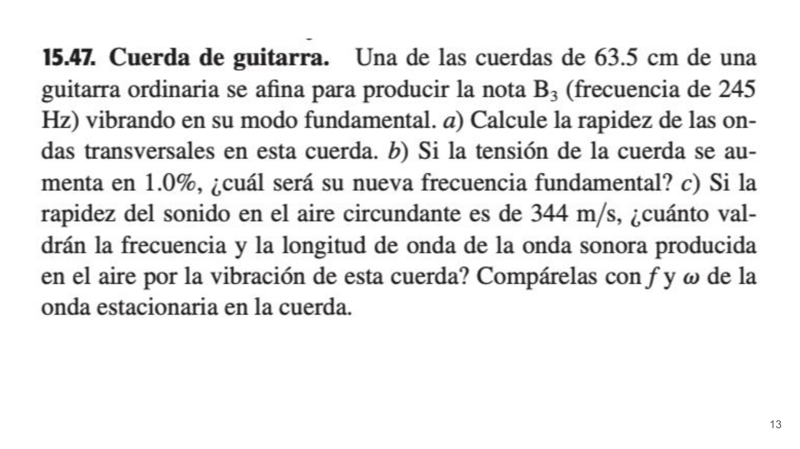
En el modo fundamental $n=1$, la longitud de onda en la cuerda es $\lambda_1 = 2L$. La frecuencia depende de la tensión como $f \propto \sqrt{T}$. Cuando la cuerda vibra, perturba el aire circundante a la misma frecuencia $f$, pero con rapidez $v_{\text{sonido}}$.
Longitud de onda en la cuerda:
$$\lambda = 2L = 2(0.635\text{ m}) = 1.270\text{ m}$$
$$v = \lambda f = (1.270\text{ m})(245\text{ s}^{-1}) = 311.15\text{ m/s}$$
$$v = 311.15\text{ m/s} \approx 311\text{ m/s}$$Nueva tensión: $T' = 1.010 T$.
Como $f \propto \sqrt{T}$:
$$f' = f \sqrt{\frac{T'}{T}} = 245 \times \sqrt{1.010} = 245 \times 1.0049876 \approx 246.22\text{ Hz}$$
$$f' = 246.22\text{ Hz} \approx 246.2\text{ Hz}$$• Frecuencia del sonido en el aire: La vibración mecánica fuerza al aire a oscilar al mismo ritmo, por lo tanto $f_{\text{aire}} = f = 245\text{ Hz}$ y $\omega_{\text{aire}} = \omega_{\text{cuerda}} = 2\pi(245) = 1539.4\text{ rad/s}$.
• Longitud de onda en el aire:
$$\lambda_{\text{aire}} = \frac{v_{\text{sonido}}}{f_{\text{aire}}} = \frac{344\text{ m/s}}{245\text{ s}^{-1}} \approx 1.4041\text{ m} \approx 1.40\text{ m}$$
$$f_{\text{aire}} = 245\text{ Hz},\quad \lambda_{\text{aire}} = 1.40\text{ m}$$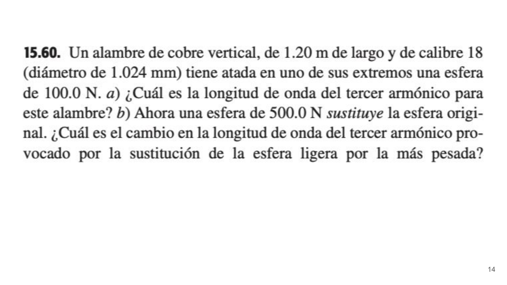
En una cuerda o alambre con extremos fijos, las longitudes de onda de las ondas estacionarias están **geométricamente cuantizadas** exclusivamente por la longitud $L$: $\lambda_n = \frac{2L}{n}$.
$$\lambda_3 = \frac{2L}{3} = \frac{2(1.20\text{ m})}{3} = \frac{2.40\text{ m}}{3} = 0.800\text{ m} = 80.0\text{ cm}$$
$$\lambda_3 = 0.800\text{ m}$$Al sustituir la esfera de $100\text{N}$ por la de $500\text{N}$, aumenta la tensión $T$ y por tanto aumenta la velocidad $v$ y la frecuencia $f_3$.
Sin embargo, los nodos permanecen en los extremos fijos a distancia $L = 1.20\text{ m}$, por lo que $\lambda_3' = \frac{2L}{3} = 0.800\text{ m}$.
Cambio en la longitud de onda:
$$\Delta \lambda_3 = \lambda_3' - \lambda_3 = 0.800\text{ m} - 0.800\text{ m} = 0.00\text{ m}$$
$$\Delta \lambda_3 = 0.00\text{ m} \quad \text{(No cambia)}$$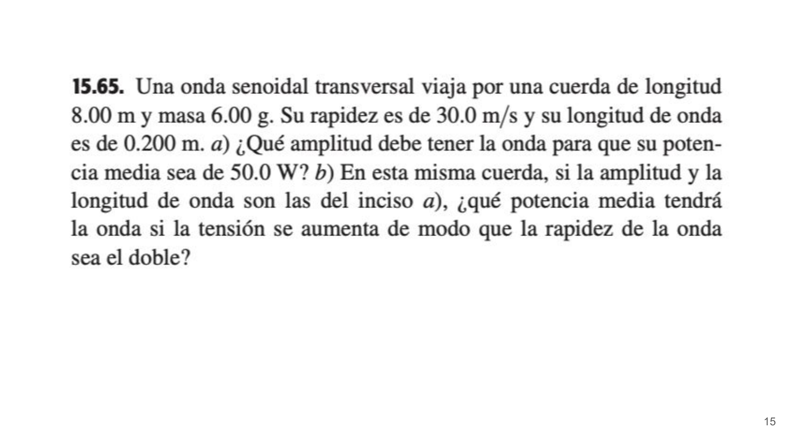
La potencia media transmitida por una onda armónica es $P_{\text{med}} = \frac{1}{2} \mu v \omega^2 A^2$. Como $\omega = \frac{2\pi v}{\lambda}$, la potencia se puede expresar como $P = \frac{2\pi^2 \mu A^2 v^3}{\lambda^2}$.
Frecuencia angular: $\omega = 2\pi \frac{v}{\lambda} = 2\pi \frac{30.0}{0.200} = 300\pi \approx 942.48\text{ rad/s}$.
Despejamos la amplitud $A$ de $P_{\text{med}} = \frac{1}{2} \mu v \omega^2 A^2$:
$$A^2 = \frac{2 P_{\text{med}}}{\mu v \omega^2} = \frac{2(50.0)}{(7.50 \times 10^{-4})(30.0)(942.48)^2} = \frac{100.0}{(0.0225)(8.8826 \times 10^5)} = \frac{100.0}{19985.9} \approx 5.0035 \times 10^{-3}\text{ m}^2$$
$$A = \sqrt{5.0035 \times 10^{-3}} \approx 0.07074\text{ m} = 7.07\text{ cm}$$
$$A = 7.07\text{ cm} = 0.0707\text{ m}$$Manteniendo la misma amplitud $A$ y la misma longitud de onda $\lambda$, como $\omega = \frac{2\pi v}{\lambda} \propto v$:
$$P_{\text{med}} = \frac{2\pi^2 \mu A^2}{\lambda^2} v^3 \propto v^3$$
Al duplicar la rapidez ($v_2 = 2 v_1$):
$$P_2 = P_1 \times (2)^3 = 50.0\text{ W} \times 8 = 400.0\text{ W}$$
$$P_2 = 400\text{ W}$$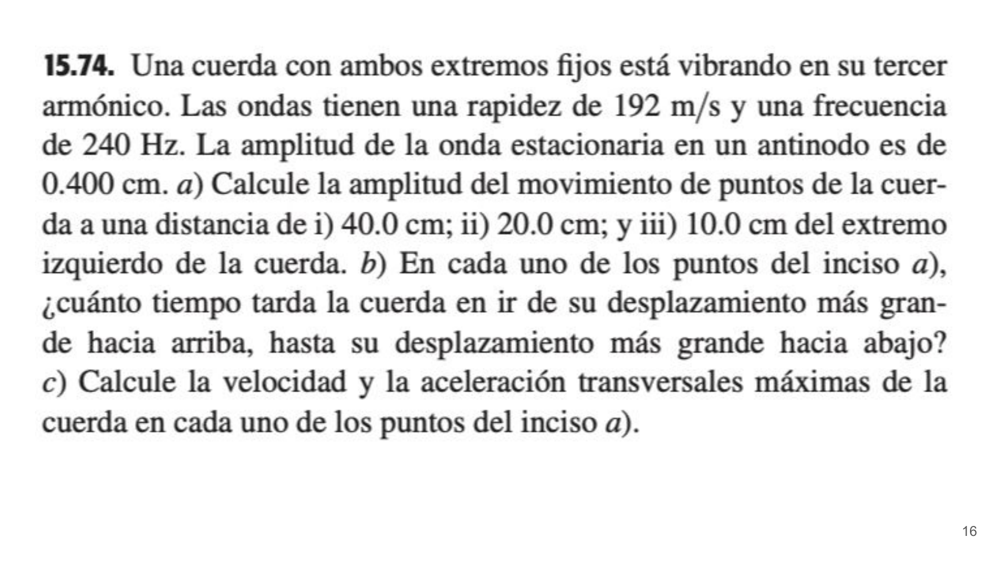
La amplitud en cualquier punto $x$ viene dada por la envolvente $A(x) = A_{SW} |\sin(kx)|$. Cada punto experimenta un M.A.S. transversal con frecuencia angular $\omega = 2\pi f$, velocidad máxima $v_{y,\max}(x) = A(x) \omega$ y aceleración máxima $a_{y,\max}(x) = A(x) \omega^2$.
• Longitud de onda: $\lambda = \frac{v}{f} = \frac{192\text{ m/s}}{240\text{ Hz}} = 0.800\text{ m} = 80.0\text{ cm}$.
• Número de onda: $k = \frac{2\pi}{\lambda} = \frac{2\pi}{80.0\text{ cm}} = \frac{\pi}{40.0}\text{ rad/cm}$.
• i) En $x = 40.0\text{ cm}$: $A(40) = (0.400)|\sin(\frac{\pi}{40} \cdot 40)| = (0.400)|\sin(\pi)| = 0.00\text{ cm}$ (¡Es un NODO!)
• ii) En $x = 20.0\text{ cm}$: $A(20) = (0.400)|\sin(\frac{\pi}{40} \cdot 20)| = (0.400)|\sin(\frac{\pi}{2})| = 0.400\text{ cm} = 4.00\text{ mm}$ (¡Es un ANTINODO!)
• iii) En $x = 10.0\text{ cm}$: $A(10) = (0.400)|\sin(\frac{\pi}{40} \cdot 10)| = (0.400)|\sin(\frac{\pi}{4})| = (0.400)\frac{\sqrt{2}}{2} \approx 0.2828\text{ cm} = 2.83\text{ mm}$
$$A(40\text{cm})=0,\ A(20\text{cm})=4.00\text{mm},\ A(10\text{cm})=2.83\text{mm}$$El recorrido de cresta a valle corresponde exactamente a medio ciclo de oscilación:
$$\Delta t = \frac{T}{2} = \frac{1}{2f} = \frac{1}{2(240\text{ s}^{-1})} = \frac{1}{480}\text{ s} \approx 2.083 \times 10^{-3}\text{ s} = 2.08\text{ ms}$$
(Válido para todos los puntos excepto los nodos, que siempre permanecen en reposo en $y=0$).
$$\Delta t = \frac{T}{2} = 2.08\text{ ms}$$Frecuencia angular: $\omega = 2\pi(240) = 480\pi \approx 1507.96\text{ rad/s}$.
• i) En $x = 40.0\text{ cm}$ (Nodo): $v_{y,\max} = 0$, $a_{y,\max} = 0$.
• ii) En $x = 20.0\text{ cm}$ (Antinodo, $A = 0.0040\text{m}$):
$$v_{y,\max} = (0.00400\text{ m})(1507.96\text{ s}^{-1}) \approx 6.032\text{ m/s}$$
$$a_{y,\max} = (0.00400\text{ m})(1507.96\text{ s}^{-1})^2 \approx 9.096 \times 10^3\text{ m/s}^2 \approx 9.10 \times 10^3\text{ m/s}^2$$
• iii) En $x = 10.0\text{ cm}$ ($A = 0.002828\text{m}$):
$$v_{y,\max} = (0.002828\text{ m})(1507.96\text{ s}^{-1}) \approx 4.265\text{ m/s}$$
$$a_{y,\max} = (0.002828\text{ m})(1507.96\text{ s}^{-1})^2 \approx 6.432 \times 10^3\text{ m/s}^2 \approx 6.43 \times 10^3\text{ m/s}^2$$
$$\begin{cases} x=40\text{cm}: v=0,\ a=0 \\ x=20\text{cm}: v=6.03\text{m/s},\ a=9.10\times 10^3\text{m/s}^2 \\ x=10\text{cm}: v=4.27\text{m/s},\ a=6.43\times 10^3\text{m/s}^2 \end{cases}$$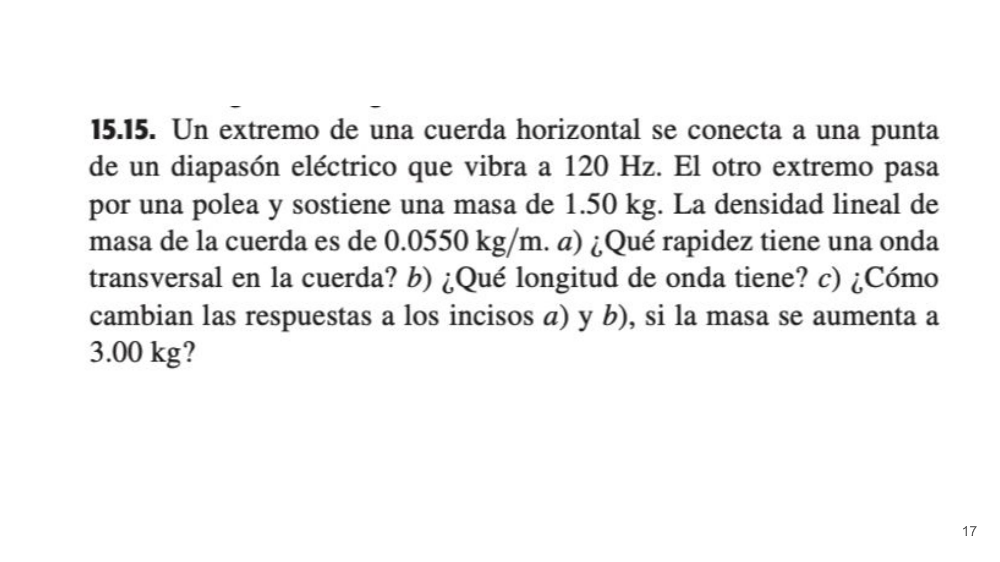
La tensión estática en la cuerda horizontal es igual al peso de la masa que cuelga en la polea: $T = m g$. La rapidez es $v = \sqrt{\frac{T}{\mu}}$ y la longitud de onda es $\lambda = \frac{v}{f}$.
Tensión: $T_1 = m_1 g = (1.50\text{ kg})(9.80\text{ m/s}^2) = 14.70\text{ N}$.
$$v_1 = \sqrt{\frac{T_1}{\mu}} = \sqrt{\frac{14.70\text{ N}}{0.0550\text{ kg/m}}} = \sqrt{267.27} \approx 16.348\text{ m/s}$$
$$v_1 = 16.35\text{ m/s}$$$$\lambda_1 = \frac{v_1}{f} = \frac{16.348\text{ m/s}}{120\text{ Hz}} \approx 0.1362\text{ m} = 13.62\text{ cm}$$
$$\lambda_1 = 0.136\text{ m} = 13.6\text{ cm}$$Como la masa se duplica ($m_2 = 2 m_1$), la tensión se duplica ($T_2 = 2 T_1$).
La rapidez aumenta por un factor de $\sqrt{2} \approx 1.4142$:
$$v_2 = v_1 \sqrt{2} = 16.348 \times 1.4142 \approx 23.120\text{ m/s}$$
Como la frecuencia $f = 120\text{ Hz}$ es constante (la impone el diapasón), la longitud de onda también aumenta por $\sqrt{2}$:
$$\lambda_2 = \lambda_1 \sqrt{2} = 0.1362 \times 1.4142 \approx 0.1927\text{ m} = 19.3\text{ cm}$$
$$v_2 = 23.12\text{ m/s},\quad \lambda_2 = 0.193\text{ m} \quad (\text{Aumentan por } \sqrt{2})$$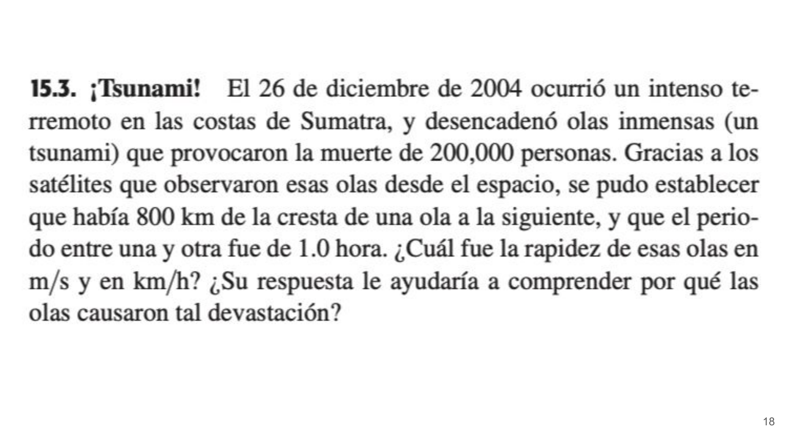
Para cualquier onda armónica, la rapidez fundamental de propagación es el cociente entre la longitud de onda y el periodo: $v = \frac{\lambda}{T}$.
• En kilómetros por hora:
$$v = \frac{\lambda}{T} = \frac{800\text{ km}}{1.0\text{ h}} = 800\text{ km/h}$$
• En metros por segundo (SI):
$$v = 800 \times \frac{1000\text{ m}}{3600\text{ s}} = \frac{800}{3.6} \approx 222.22\text{ m/s}$$
$$v = 800\text{ km/h} = 222.2\text{ m/s}$$1. Velocidad colosal: $800\text{ km/h}$ es la velocidad de crucero de un avión comercial a reacción tipo Boeing 777.
2. Masa de agua monumental: Con una longitud de onda de $800\text{ km}$, la onda involucra el movimiento de toda la columna de agua oceánica profunda hasta el lecho marino.
3. Efecto Shoaling en la costa: Al acercarse a aguas poco profundas, la rapidez disminuye pero la conservación de flujo de energía comprime la longitud de onda y eleva la altura del agua en muros de más de 20-30 metros con una energía destructiva inconmensurable.
$$\text{Velocidad de avión comercial combinada con masa colosal de agua marina}$$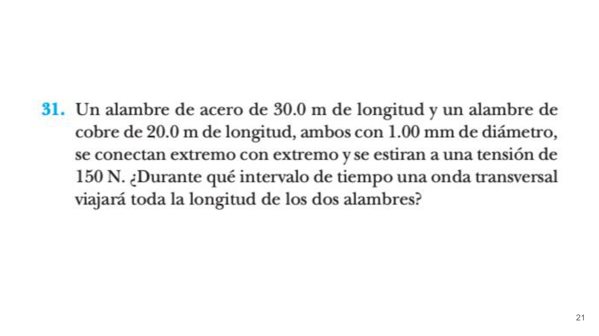
Al estar conectados en serie extremo con extremo, la tensión $T$ es idéntica en ambos alambres. Calculamos la densidad lineal $\mu = \rho A_{\text{transversal}}$, la rapidez $v = \sqrt{T/\mu}$ en cada tramo y sumamos los tiempos de viaje: $t_{\text{total}} = \frac{L_1}{v_1} + \frac{L_2}{v_2}$.
Área transversal común ($r = 0.50\text{ mm} = 5.0 \times 10^{-4}\text{ m}$):
$$A = \pi r^2 = \pi (5.00 \times 10^{-4}\text{ m})^2 = \frac{\pi}{4}(1.00 \times 10^{-3})^2 \approx 7.854 \times 10^{-7}\text{ m}^2$$
• Acero: $\mu_{\text{acero}} = \rho_{\text{acero}} A = (7860\text{ kg/m}^3)(7.854 \times 10^{-7}\text{ m}^2) \approx 6.1732 \times 10^{-3}\text{ kg/m}$
• Cobre: $\mu_{\text{cobre}} = \rho_{\text{cobre}} A = (8920\text{ kg/m}^3)(7.854 \times 10^{-7}\text{ m}^2) \approx 7.0057 \times 10^{-3}\text{ kg/m}$
$$\mu_{\text{acero}} = 6.173\text{ g/m},\quad \mu_{\text{cobre}} = 7.006\text{ g/m}$$• Acero: $v_1 = \sqrt{\frac{T}{\mu_{\text{acero}}}} = \sqrt{\frac{150.0}{6.1732 \times 10^{-3}}} = \sqrt{24298.5} \approx 155.88\text{ m/s}$
• Cobre: $v_2 = \sqrt{\frac{T}{\mu_{\text{cobre}}}} = \sqrt{\frac{150.0}{7.0057 \times 10^{-3}}} = \sqrt{21411.1} \approx 146.32\text{ m/s}$
$$v_{\text{acero}} = 155.88\text{ m/s},\quad v_{\text{cobre}} = 146.32\text{ m/s}$$$$t_1 = \frac{L_1}{v_1} = \frac{30.0\text{ m}}{155.88\text{ m/s}} \approx 0.19246\text{ s}$$
$$t_2 = \frac{L_2}{v_2} = \frac{20.0\text{ m}}{146.32\text{ m/s}} \approx 0.13669\text{ s}$$
$$t_{\text{total}} = t_1 + t_2 = 0.19246 + 0.13669 = 0.32915\text{ s} \approx 0.329\text{ s}$$
$$t_{\text{total}} = 0.329\text{ s} = 329\text{ ms}$$